在Mac 環境寫Markdown的好物
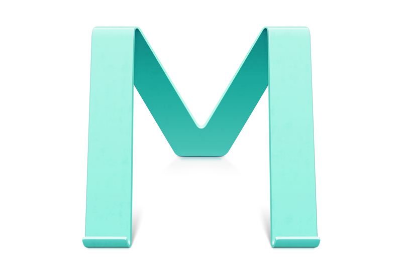
Mou介紹
-這套Markdown editor 在Markdown.tw就有推薦下載，這套軟體的開發者是對岸的高手-羅晨，對他有興趣可以看inside這篇專訪
下載後打開app就會先看他的使用介紹，左邊寫右邊preview
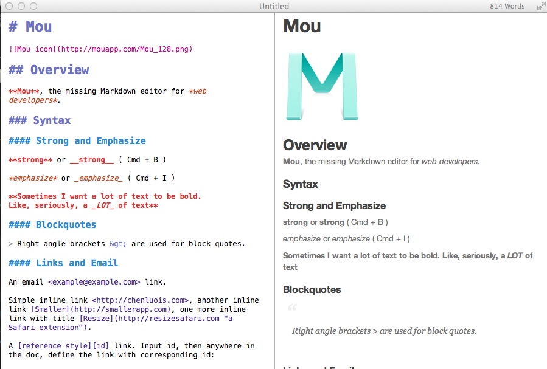
他也提供了將寫好的文檔轉換成HTML格式或PDF輸出的功能，而且他HTML的CSS本身就支援Responsive Design，算是很貼心(可惜dotblog好像沒有支援的樣板，只能自己寫custom css，真希望能提供RWD樣板選擇一下)
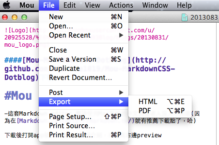
因為作者是華人所以他也做了中文常常會呈現的橫板的樣式(選單上選View->Vertical Writing)的功能，可以呈現下面的結果
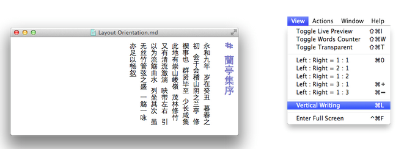
這邊介紹一下如何更改呈現的樣式,並且將Markdownpad的樣式拿過來Mou用，在上面選單選擇Mou->preferences->CSS，這邊可更換呈現風格(預設四種)，而當你按下edit時就會到你樣式的目錄，這邊可以發現其實也是四份CSS而已
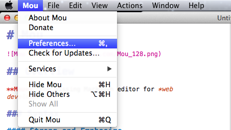
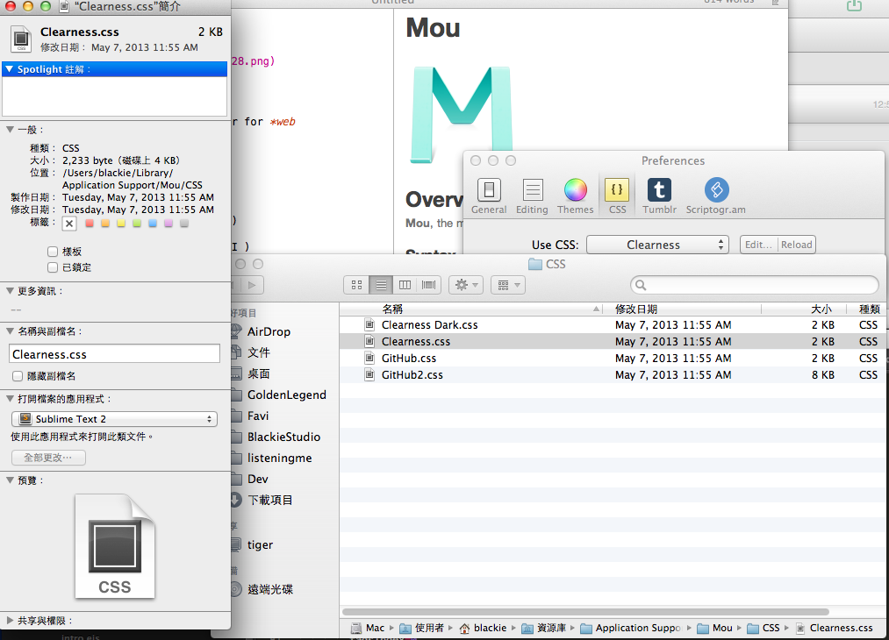
有看過C大文章的人就知道windows也有一款Markdown的編輯器叫做Markdownpad，這邊可以把Markdownpad輸出的CSS放到Mou，來讓兩邊編輯器呈現較一致的畫面，使用上我們就把從Markdownpad輸出的CSS作修改後放到剛剛的樣式目錄就可以了(Markdownpad的CSS在開頭有載點)
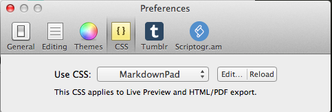
使用心得
Mou真的蠻好用的而且用免費根本佛心～！
會分享這篇文章是因為前陣子為看到dotblog上有篇C大所寫的[Other] 使用Markdown格式編寫點部落文章 讓我發現原來Windows 也有相同的軟體了，而且也是可以把產生出來文件轉成網頁在dotblog上面呈現，這對於我來說實在很吸引人，後來才想到我應該可以把兩邊的CSS整合成成兩個版本互相使用，也可以讓Mou的套版順利呈現到dotblog.
先前我在Markdownpad上面使用或是將產生的HTML作檢視都會遇到一個問題就是對於code這個tag的support有些問題(斷字跟換行好像呈現上有些錯誤)
所以我最後的解法就是先透過quote的方式下面在接上code區塊的寫法，但結果很醜..而Mou就沒有這樣的問題，兩者的比較如下圖(上面是Mou，下面是Markdownpad的CSS，兩篇是不同文章)
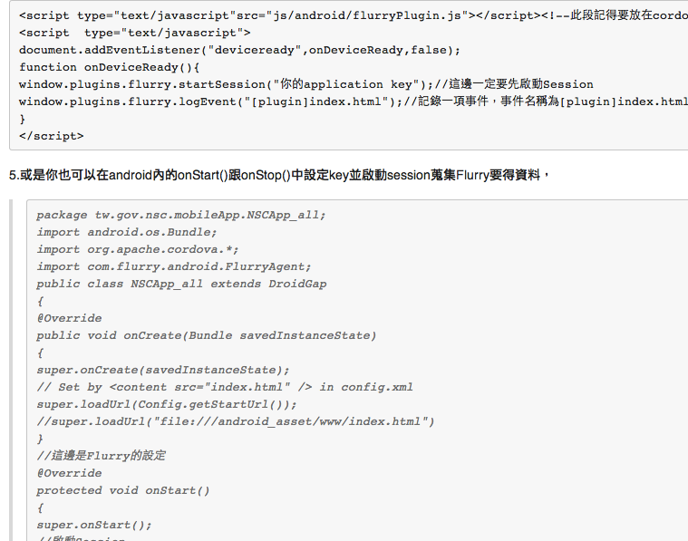
因為上述的原因現在我的blog也是將Mou的CSS套在我的dotblog上面，加上個人覺得Mou的CSS比較偏向github的風格所以作了更換，如果想把MarkdownPad的CSS給Mou呈現或是想把Mou上面的Github2(2底色白色,1是灰色)這個樣式用在dotblog上的話可以直接從這邊Mou-MarkdownCSS-Dotblog下載
Github1 vs Markdownpad
這邊提供Markdownpad的css放到Mou的Github1(Mou預設)一些比較截圖(每組圖上面都是Mou下面都是Markdownpad)
比較一
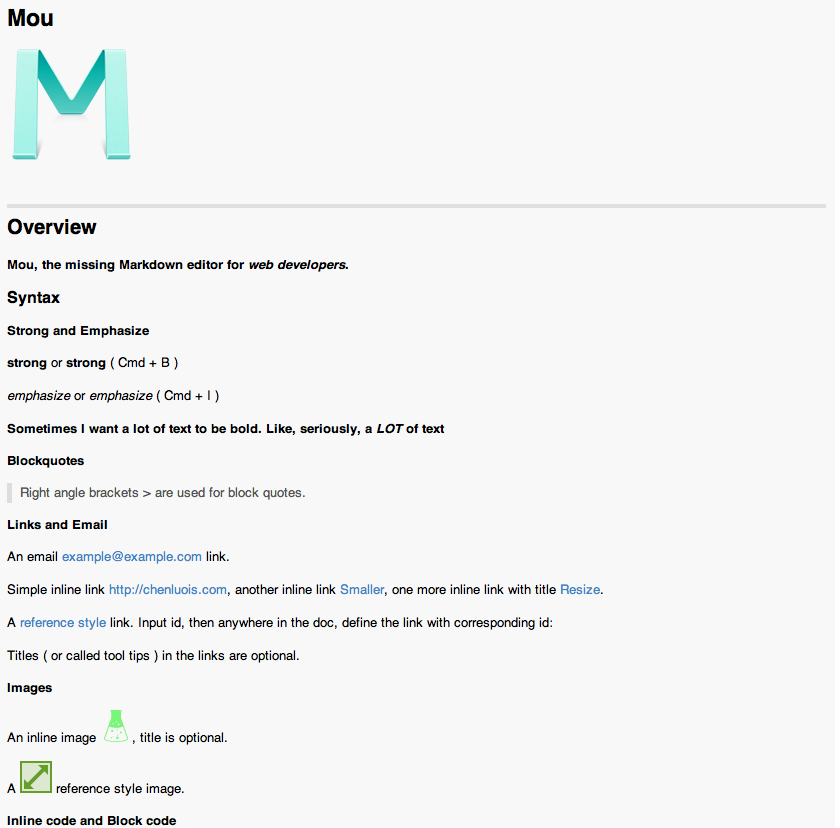
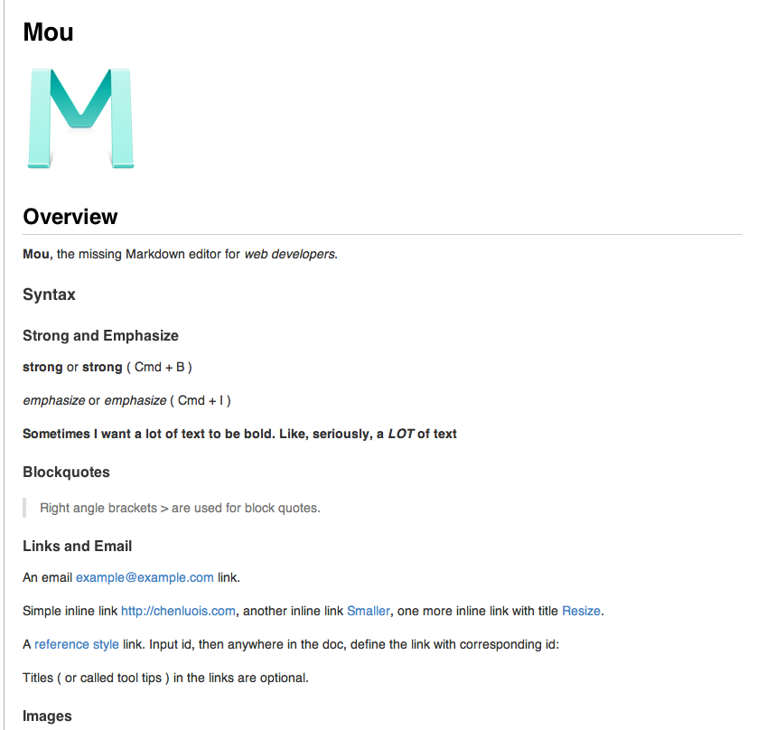
比較二
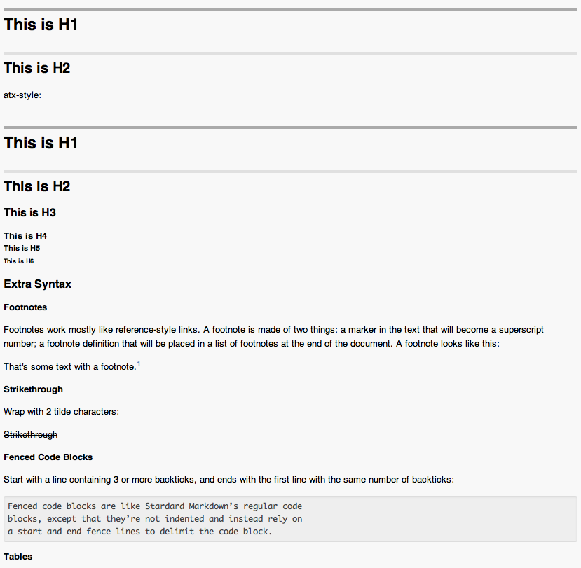
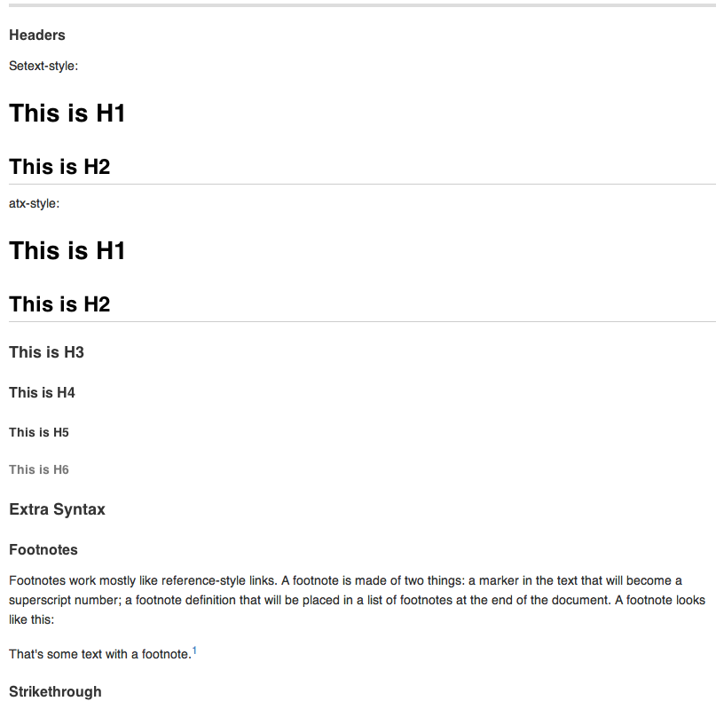
比較三
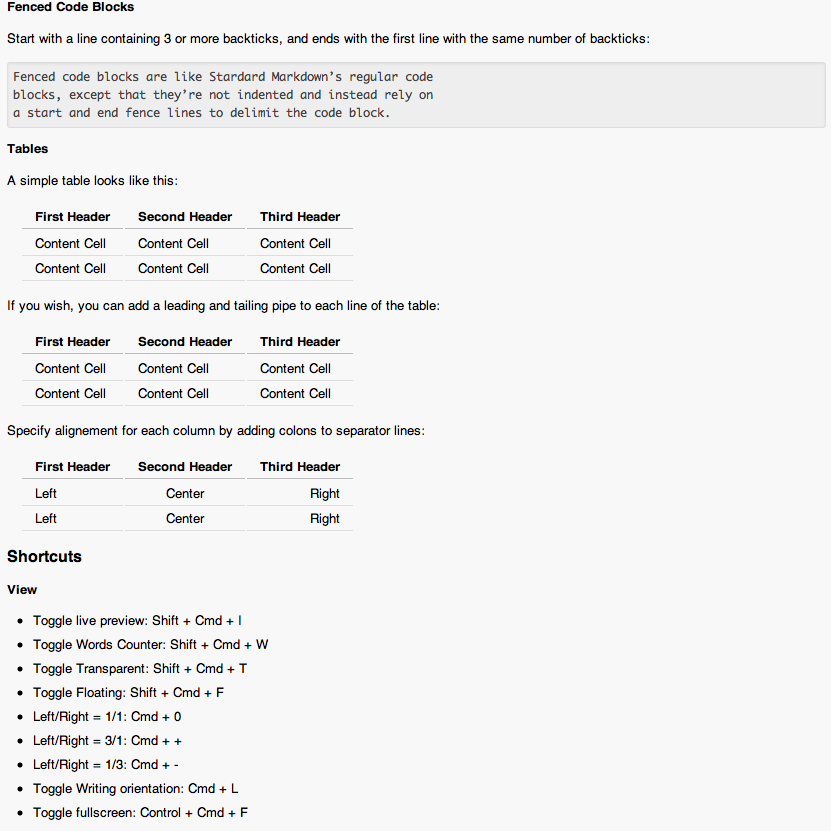
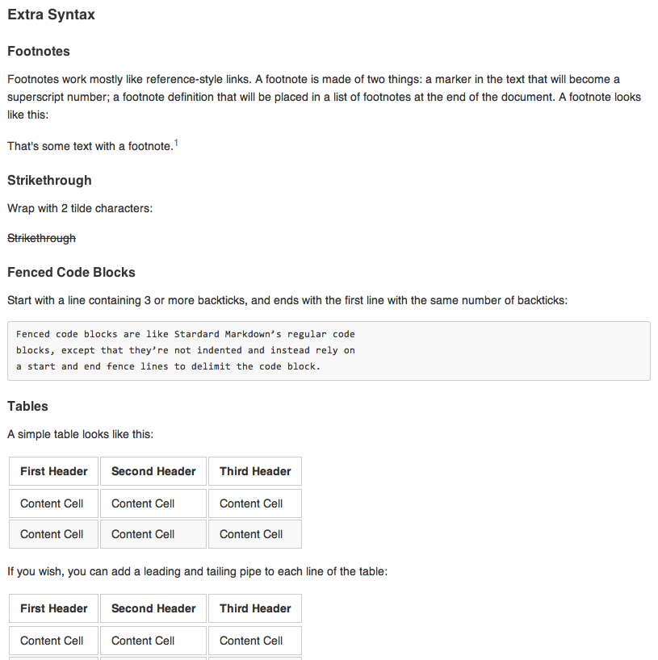
比較四
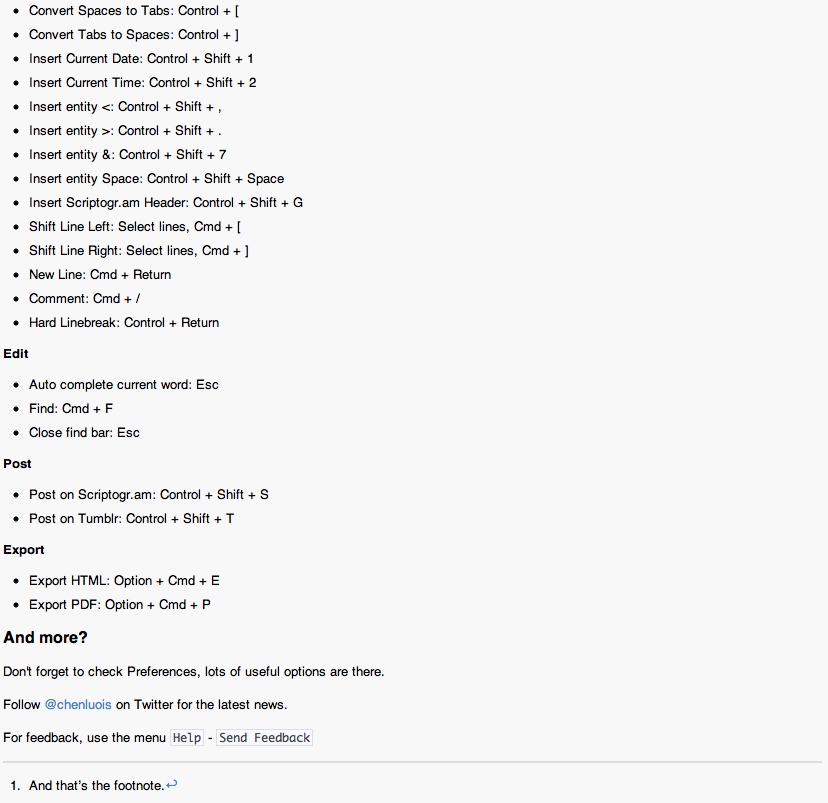
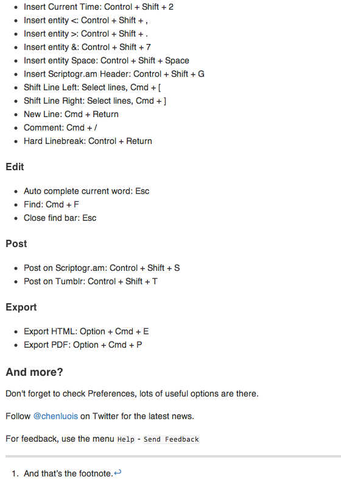
工欲善其事，必先利其器，讓我們一起學好Markdown吧～！